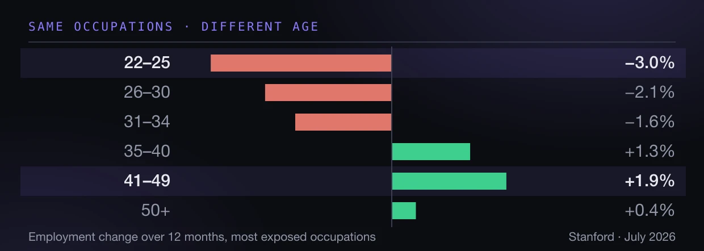

研究 · No. 3 · 2026年9月
ビル・ゲイツの労働をめぐるエッセイを、データで検証する
扉は閉じていない。狭くなった。 ビル・ゲイツは、労働市場の閾値はすでに越えたと言う。私はそのエッセイを読み、それから一週間かけて、彼が一度も引用しない雇用データと突き合わせた。診断は持ちこたえる。ただし損害のかたちは、多くの人が思い描くものとは違う。

解体する価値のある予測
私はビル・ゲイツを追っていない。8月のエッセイを読んだのは、誰かが目の前に置いたからで、そして手が止まった——不安を煽るからではなく、煽らないからだ。ある系をよく見た人物が、自分の見立てでどこが壊れるかを列挙し、どの部分は直せないと認める文章として読める。
この組み合わせは、一晩を費やすには十分に珍しい。以下は彼の議論を節ごとにたどり、彼が省いた数字を添えたものだ。ここに出る数字はすべて出典にたどり着く。エッセイと同日のインタビューが食い違う箇所では、どちらの発言かを示す——この区別は効いてくる。最も引用される数字はエッセイではなくインタビューにあるからだ。
面白い問いは、彼が正しいかどうかではなかった。データが彼の主張のかたちに何をするか、である。
いつもの比較が効かない理由
この移行を考えるとき、多くの人は「畑からオフィスへ」の比喩に手を伸ばす。ゲイツはこの類推が二か所で壊れると論じ、どちらもはっきり言っておく価値がある。
第一に時間である。あの移行は何世代にもわたった。今回は彼の見積もりでは、法務、顧客対応、医療、ソフトウェア、製造に十年のうちに降りてくる。
第二に、そしてより重要なことに、畑からオフィスへの移動は人間の認知を要する仕事を生んだ。この技術は認知そのものを代替する。同じ種類の次の段は見当たらない。
彼は速度を説明する一点を加える。パソコンが働き方を変えるには二十年かかった。誰かがソフトを書き、価格を下げ、人を訓練しなければならなかったからだ。この技術は人がすでに持っている機器で動き、普通の言葉を話す。あちらが私たちに合わせるのであって、その逆ではない。
彼がすでに越えたと言うもの
同日のインタビューで、ゲイツはすでに背後にあると考える五つの閾値を挙げる。生物学的能力、サイバー能力、心理社会的依存、労働市場の破壊、そして制御を失う初期の兆候である6。彼の主張はどれかが到来したということではない。業界は何年ものあいだ、それらが視野に入ったら減速すると約束しておきながら、公の議論なしにその横を通り過ぎたということだ。
出典についての註記。 五つの閾値の一覧はエッセイにない。エッセイが挙げるのは三つのリスク——消える仕事、力を得た悪意ある者、子どもと人間関係への害——であり、移行の計画は存在しないと明言している5。鋭い枠組みはインタビューで出た。報道の多くは両者を混ぜている。
閾値という語は修辞ではない。主要な研究所はそれぞれ安全枠組みを公表し、能力の水準をあらかじめ名指ししている——生物兵器への助力、自律的なサイバー作戦、自己増殖——そしてそこで立ち止まると約束している。ゲイツが物差しにしているのはこの約束である。
効果が実際に現れる場所
ここで彼のエッセイは黙る。脆弱な職種の若年労働者で雇用が落ち、年長の同僚では横ばいだったと書きながら、数字をひとつも出さない。数字は存在し、しかもその一文より面白い。
まず市場全体を見ると、ほとんど見るものがない。数百万人を覆う給与データを職種の曝露度で束ねると、どの群も互いに1パーセントポイント以内に収まっている3。複数の研究チームが労働市場にAIの痕跡をまったく見いだせないと報告するのは、これが理由である。
スタンフォード・デジタル経済研究所、ADP給与データの均衡パネル3。
ここに変数を一つ足す。同じデータ、同じ月、同じ職種を年齢で割る。
同じパネル、同じ月3。最年少層と41〜49歳層の差は4.9パーセントポイント——しかも同じ職種の内側で。
効果は職種のあいだにはない。職種の内側にあり、年齢で並んでいる。長い窓で見ると断層はさらに鋭い。2022年末以降、曝露上位2群における22〜25歳の雇用は11パーセント落ち、下位3群の同じ年齢層は10パーセント伸びた3。
誰も解雇されていない。入れてもらえる人が減っている。
この区別こそが発見である。曝露職種の若年労働者の離職率は上がらなかった——採用が減速した。すでに中にいる人の背後で扉が閉じたのではない。入ろうとする人にとって狭くなったのだ。ゲイツが初級職について書くとき述べているのはまさにこれで、彼のエッセイのうちデータとの接触に最もよく耐える部分である。
研究者自身が付す但し書き。 学歴を統制すると効果は半減し、低下の一部は生成AI以前に始まっており、差は全国調査ではこの給与パネルより小さい。パネルは米国労働市場を代表しておらず、論文は査読を経ていない。著者たちは結果を因果ではなく記述的なものと呼んでいる3。
自分の仕事を確かめる
ゲイツは観察にもとづいて職種を挙げる。営業とサポート、ソフトウェア、パラリーガルの仕事、それから与信審査、データ分析、患者のトリアージ。いまはそれを照合できる公式の尺度がある。8月、労働統計局はAI曝露による職種分類を初めて公表した。五つの独立した尺度——理論的なもの三つと、観察された実使用によるもの二つ——から構築され、2035年までの雇用予測を伴っている1。
下に職種を入力してほしい。返ってくるものはすべて末尾の出典から来ており、どの数字にもその出所への註が付いている。
対話 · 825職種
職種について
そこにいるあなた
これはあなたについての予言ではない。 ここに出るのは、あなたの職種が他とくらべてどこに位置するか、そして似た曝露度の職種であなたと同年代の雇用に何が起きたか、である。曝露とは、タスクにモデルを適用しうるという意味であり、局はそこから失職も自動化も賃金への影響も導かれないと明記している1。
市場の五分の一を、丁寧に
825職種をひとつの面に並べると、絵は世間の議論より静かである。下の各タイルが職種で、大きさは就業者数、色は公式の曝露カテゴリを表す。どれでも重ねるか触れてみてほしい。
タイルに重ねるか触れると職種が出ます。
局が予測する831職種全体における、カテゴリごとの雇用シェア：
| 曝露 | 職種数 | 就業者、2025年 | シェア | 予測 2025–35 |
|---|---|---|---|---|
| 非常に高い | 206 | 53.2百万人 | 31.3% | +2.0% |
| 高い | 206 | 42.1百万人 | 24.8% | +3.1% |
| 中程度 | 206 | 44.7百万人 | 26.2% | +6.2% |
| 低い | 213 | 30.3百万人 | 17.8% | +2.5% |
労働統計局、AI曝露カテゴリと2025〜35年の雇用予測1。
曝露が最も高い3分の1の市場は最も遅く伸びる——それでも伸びる。これは意見ではなく公式の予測である。しかも最上位カテゴリの内部のばらつきは、カテゴリ間のばらつきより大きい。
| 曝露が非常に高い | 就業者 | 2035年予測 |
|---|---|---|
| Office clerks, general | 2.60百万人 | −6.0% |
| Secretaries and administrative assistants | 1.89百万人 | −6.0% |
| Bookkeeping and auditing clerks | 1.53百万人 | −5.6% |
| Customer service representatives | 2.67百万人 | −5.3% |
| Computer and information systems managers | 0.69百万人 | +15.8% |
| Logisticians | 0.26百万人 | +17.6% |
| Data scientists | 0.28百万人 | +34.6% |
同じ曝露カテゴリ、逆向きの軌跡。ゲイツはこれを一度だけ、要約の多くが落とした従属節で述べている。ソフトウェアではコスト低下が新しい需要を生むので、そこでの純減は他より小さくなる、と。予測は彼に同意している。
転換は点検が止まるときに来る
エッセイで最も過小評価されている一行は、どの職種の話でもない。ゲイツは、働く人にとって最大の転換は技術がほぼ無誤差になったときに来ると書く。そのときこそ人間の確認なしに走らせられるようになり、経済的な誘因はすべてそちらを向いているからだ。
これを数字にするベンチマークがある。OpenAIのGDPvalは、44職種にわたる1320件の実際の成果物——それぞれおよそ7時間分の仕事——でモデルを経験ある専門家と比べる7。見出しは、最前線のモデルがおよそ半分のタスクで人間の専門家に並ぶか上回るというものだ。同じ論文には、ほとんど誰も引用しない表が埋まっている。
点検の費用
人間の専門家に対するモデルの優位
この二つの数字のあいだにあるものはすべて、どれだけ点検を残すかという問題である7。
素朴に測れば、モデルはおよそ90倍速く、数百倍安い。専門家の検証を価格に入れた途端、優位は時間でおよそ1.1〜1.4倍、費用で1.2〜1.6倍まで縮む7。
つまり、この問題の経済性はすべて検証の工程に載っている。人がまだ点検しているあいだ、利得はわずかだ。賞金の全部は点検を外した瞬間に現れる——だからこそ外されるのであり、だからこそゲイツが個々の能力ではなくこれを本当の閾値と呼ぶのは正しい。
エッセイが落としている部分
ゲイツは全体を公正さのまわりに組み立てる。この技術は最大の平等化装置になるか、最悪の不公正の源になるか、と。そして、曝露した仕事に実際に就いているのは誰かを、彼は一度も問わない。
私は曝露分類を雇用調査と突き合わせた。就業者数で重みづけすると、最上位の曝露カテゴリの職種は57.5パーセントが女性である。最下位のカテゴリでは36.9パーセント14。20ポイントの差で、理由は微妙でもなんでもない。事務、管理、サポートの仕事は、最も曝露が高く、しかもほぼどこでも最も女性が多い。
国際労働機関は、米国のではなく国際的な分類にもとづく方法で、世界規模でも同じことを見いだしている。曝露が最上位の層には女性雇用の4.7パーセントに対し男性雇用の2.4パーセントが位置し、高所得国では9.6対3.5となる8。
同じILOの研究は規模の検算にも役立つ。世界の曝露を雇用の24パーセントと置くのに対し、IMFは40パーセント近くと置く9。信頼できる二つの機関、ひとつの現象、そのあいだにほぼ2倍の開き。世界の数字をひとつだけ自信をもって挙げる人は、片方を選び、もう片方を隠している。
保護区、トークン、答えのない四つの問い
Human Reserved
ゲイツは、一定の仕事を人のために取り置くことを提案する。機械にできないからではなく、失うものが大きすぎると社会が判断するからだ。彼は自然保護区の言葉を借りる。個人的な出所は父親の最後の年月と、その人が自分を説明できなくなってからも彼を理解した介護者たちである。
彼は二つの根拠を挙げる。ひとつは経済的なもの。建設で職業人生を過ごした55歳を、そのまま高齢者介護へ振り向けることはできない。ひとつは人間的なもの。末期の診断を告げるロボットは技術的には可能だが、あってはならない。
そして彼自身の文章の中で、答えられない四つの問いを列挙する。何を取り置くかを誰が決めるのか。どんな基準で。企業のごまかしをどう防ぐのか。ある国がロボットに建てさせ、別の国がそうしないとき、貿易はどうなるのか。
データと照らす価値がある。彼の中心的な例である高齢者介護は、すでに人手が足りていない。自分の欠員を埋められない職種を保護区にすることは、まだ受けていない圧力から守ることだ。彼はその一部を先取りしている——若者が少なすぎる日本は、介護ロボットを歓迎するだろうと見ている。
トークンとロボットへの課税
彼が取り除きたい非対称は実在し、これほど率直に語られることは稀だ。人を雇えば雇用主は給与税を払う。機械を買えば企業は損金にできる。いまの税制は代替を補助している。
彼の処方は、AIトークンとロボットへの的を絞った課税である。財源は再訓練とより厚い安全網に充て、医療と教育を安くする用途は免れるよう設計する。経済的に非効率であることは認め、それを受け入れられる代価と見なす。税率はエッセイに出てこない。広く引用される数字はインタビュー由来で、計算ではなく選択肢として置かれたものだ6。
最も強い反論は思想的ではなく機構的である。トークン課税が測るのは計算量であって、置き換えではない。トークンの価格は桁違いに下がったので、問題が大きくなるほど課税ベースは縮み、推論はローカル機器や別の法域へ移っていく。
誠実な人たちがまだ争っていること
ここで決着済みと宣言して終えるのは簡単だろう。決着していないし、この対立は判決より価値がある。
| 知見 | 出典 |
|---|---|
| 2022年末以降、ソフトウェアの雇用成長は年およそ3ポイント減速。約50万件の職が生まれなかった | 連邦準備制度10 |
| AIの利用と雇用の変化に関連なし、2026年7月まで | イェール大学 Budget Lab11 |
| 労働時間の2.8〜3%を節約、賃金と時間への影響は正確にゼロ | デンマークの行政データ12 |
| 曝露職種の求人の減少は2022年3月に始まり——ChatGPT以前——金利サイクルを追っている | 2億3800万件の求人13 |
| 失業率は曝露が最も低い五分位で、最も高い五分位より大きく上昇した | Economic Innovation Group14 |
これらのチームすべてが一致する三点があり、今日得られる最も安全な結論である。マクロでの大量の置き換えはない。機構は解雇ではなく採用の減速である。そして曝露職種の若年労働者には何かが起きている。
もう一つの限界もここに属する。2026年のどの予測も、職種別の実際の雇用ではまだ検証できない。公式の職種系列は2025年5月までしかなく、この期間を含む次の公表は2027年より前には出ない。今日その検証を見せてくる人は、ノイズを見せている。
数字が変えるもの
ゲイツの診断は生き残る。機構の見立ては正しく、産業の見立ても正しく、初級職への強調はデータが最も直接に支持する部分である。
数字が変えるのはかたちだ。これは職種の上を転がり、ひとつずつさらっていく波ではない。職種の内側で働き、そこにいる年数で選り分けるフィルターである。それが選り落とすのは、後ろ盾が最も少なく、この先の年数が最も長い人たちだ。
彼はエッセイを四つの問いと、答えなしで閉じる。私が足したい問いはそのどれより狭く、そのどれより答えやすい。機構が入口での採用減速だとすれば、政策の的はどの職業を柵で囲うかではなく、最初の段を誰が手にするかである。保護区が守るのは、すでに梯子に乗っている人たちだ。
出典
- US Bureau of Labor Statistics. AI exposure categories and employment projections, 2025–35、2026年8月27日公表。五つの独立した尺度からカテゴリを構築。 bls.gov/emp/publications/ai-exposure-categories.htm
- Anthropic Economic Index、labor market impacts データセット —— 職種のタスクのうちモデルに持ち込まれた比率の実測値。 huggingface.co/datasets/Anthropic/EconomicIndex
- Brynjolfsson, Chandar, Chen. Canaries in the Coal Mine? スタンフォード・デジタル経済研究所、2026年8月改訂版。2026年7月までのADP給与パネル。 digitaleconomy.stanford.edu/publications/canaries-in-the-coal-mine
- US Bureau of Labor Statistics, Current Population Survey、表11：詳細職種別・性別の就業者、2025年の年平均。 bls.gov/cps/cpsaat11.htm
- Bill Gates. The turbulent AI era is here. The choices we make now are critical. GatesNotes、2026年8月26日。 gatesnotes.com
- MIT Technology Review によるビル・ゲイツへのインタビュー、2026年8月26日 —— 五つの閾値と引用された税率の出所。 technologyreview.com
- GDPval, OpenAI —— 44職種にわたる1320件の実際の成果物。検証込みの数字は費用の表を参照。 arxiv.org/abs/2510.04374
- International Labour Organization. Generative AI and Jobs: A Refined Global Index of Occupational Exposure、ワーキングペーパー140、2025年5月。 ilo.org
- International Monetary Fund. Gen-AI: Artificial Intelligence and the Future of Work、SDN/2024/001、2024年1月。 imf.org
- Crane and Soto, Federal Reserve Board, FEDS 2026-018、2026年3月。
- Budget Lab at Yale, Tracking the impact of AI on the labor market、2026年8月19日更新。 budgetlab.yale.edu
- Humlum and Vestergaard, NBER Working Paper 33777、2026年3月改訂版。
- Iscenko and Curto Millet、2026年1月 —— 2億3800万件の求人。
- Eckhardt and Goldschlag, Economic Innovation Group, AI and Jobs、2025年8月。 eig.org
対話部分の背後にある統合データセット。825職種について、雇用者数、予測、賃金中央値、公式の曝露カテゴリ、モデルに持ち込まれたタスクの実測比率、性別構成を収録。2026年9月に出典1、2、4および2025年5月公表のOccupational Employment and Wage Statisticsから構築した。
英語の原文からの翻訳です。職種名は英語のままにしてあります。SOC分類の公式名称であり、検索もその名称で動くためです。出典の正確な文言が問題になる場面では、上のリンク先の文書を確認してください。